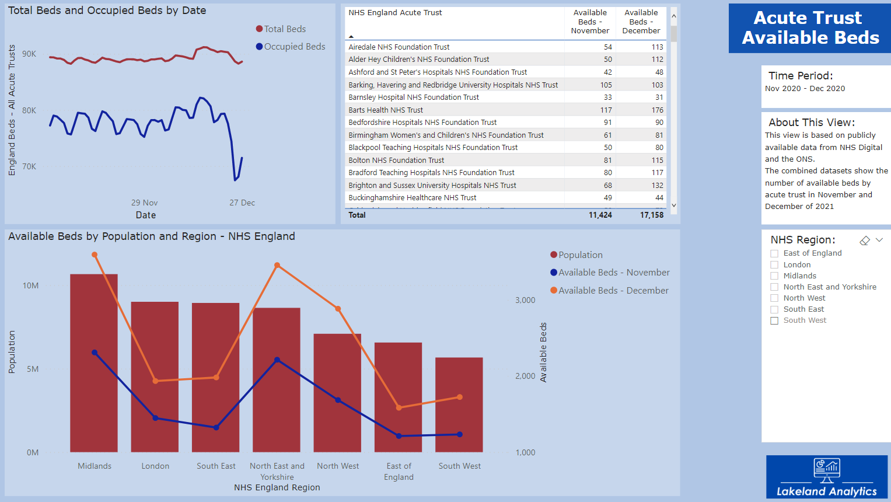
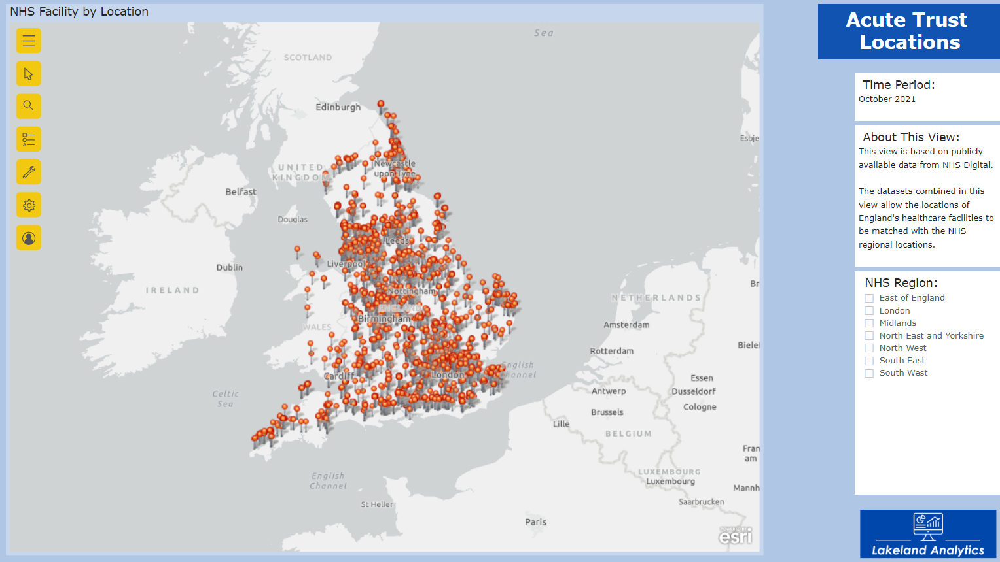
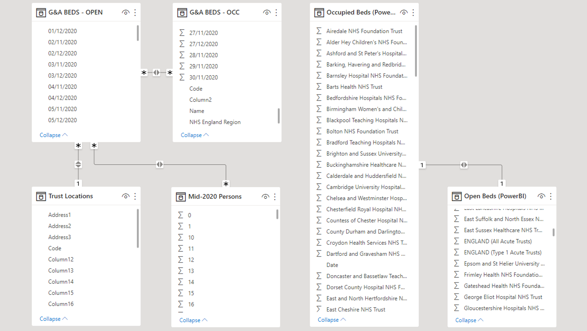

Every day we are working with datasets big and small - It really doesn't matter whether your data is buried deep in a data warehouse or if it consists of a handfull of spreadsheets, we will always be happy to help you.
Some of our clients have been concerned that the quality of their data has been too low to do anything with...this is not necessarily the case! We have tried and tested methods of extracting the data that we need whilst supporting efforts to cleanse your data if required.
Here are a few examples of the type of work that we are typically asked to carry out

Multiple datasets coming together to tell a story
Here we have taken multiple publically available datasets from the NHS Digital platform. Built into a report like this, the data can be refreshed as often as required. Sometimes our clients require a live dashboard to keep a close eye on things, equally as often we are asked to give a static view of something to support an important project for example or an application/bid for something.

GIS mapping data to identify locations of interest/opportunity
We are often asked to display client data geographically. This can be around the UK/World or more often than not, around the clients estate. Sometimes we are asked to perform detailed Operational Diagnostics - this can be find the source of waste or financial opportunity...it always helps to be able to use positional data to see the source of the problem or opportunity.

Working with relational databases
If any piece of data is going to help you see, it will most likely need to be connected to another. In this way we can bring together things like capacity and demand data to help you understand the optimum staffing level for you. This is quite a simple example but in some cases we have brought together in excess of 50 individual live datasources to help clients manage very complex operations in real time.
Helping businesses to manage suppliers
This was an interesting piece of work - the client was suffering from high waste and downtime on what was supposed to be their flagship production line. A high speed line in a high speed factory was being crippled by raw material variation. This was only a small part of the work that we did to support the client, however using one of our simple statistical tools we were able to prove to the supplier that their product was both out of specification and the cause of the problem. Process Capability Analysis is something that we are often involved in, by the time we have finished our piece of work and left behind monitoring tools, the client feels much more confortable about what is being accepted at the warehouse door.